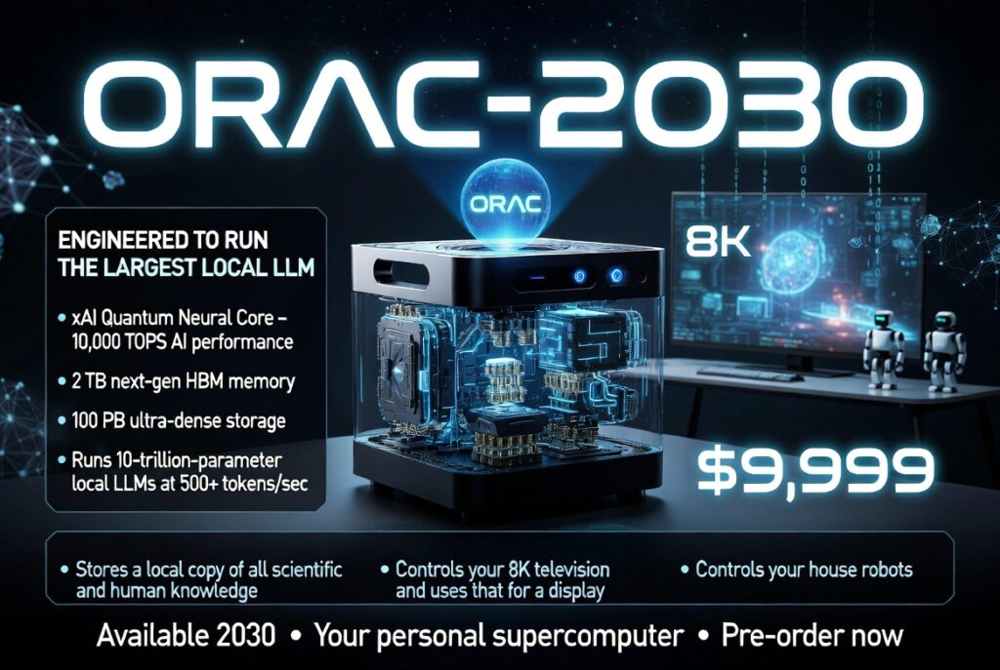
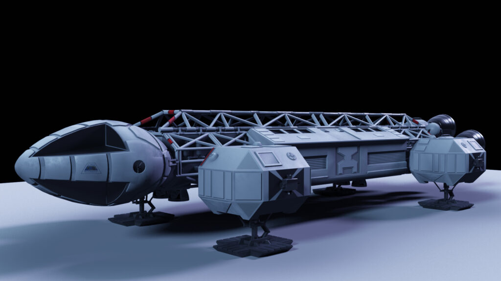
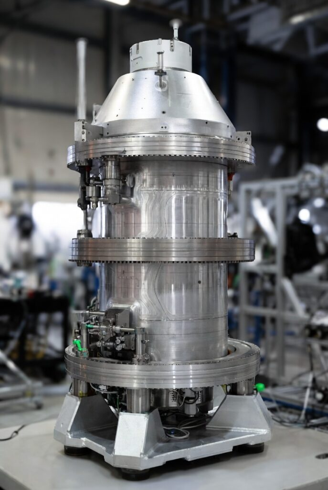

Number 1: The ORAC Computer
I will start with what I think is going to be the easiest, an AI Computer, that can interact with voice, gestures and understands every nuance of interacting with a human. When I was a teenager in the 1970’s, this was the ORAC computer from Blakes 7, it was amazing and everything I knew AI would become.
Now I look back on the shitty special effects from the program, and the barely visible low resolution pictures of Orac, it does look a bit sad and pathetic, and, again, re-watching a few clips made me realise how totally condescending it was. So 10/10 for sparking the imagination of a teen, and 1/10 for its execution.

If I was being realistic, I could probably already have this now using an API to one of the most recent LLM’s, one of the better voice-text-voice systems (though these still lack the discrimination with multiple people talking or noisy environments), and some sane/secure version of openclaw; But in my dream the AI just has to be local first, self-repairing, self-updating, where the AI is the Operating System. A computer that can basically act like a version of the AI Maria from my first sci-fi novel.. Sigh!
Number 2: The Moon Base Alpha Eagle Transporter
Now we are getting a little more into difficult to predict the timeline territory. I am a total space nerd. I watch everything to do with our future in space and worship NASA, and companies like SpaceX and RocketLab, (maybe begrudgingly Blue Origin if they can pull off what they say) But of course, being a sci-fi nerd, reality is never good enough!

Given I am 63, and with luck have another 20-30 years to go, I am edging my bet that one of these guys will knock this one out of the park too. The crazy thing about the Eagle transporter is how practical it actually seems, and visuals like the above (thank you whoever did this) actually make it look like an almost trivial. But asking a current AI such as grok, paints a much different picture. The reply I got was that if we tried this with current technology (say Raptor Engines) we would burn insane amounts of propellant. Think an EV with a 20KM range! For anything approaching usability it would need some sort of nuclear thermal rocket or fusion engine (see next). All on the NASA drawing boards but probably outside my timeline unless I eat more healthy and stop drinking beer.
Number 3: Practical, Grid-Scale Nuclear Fusion.
Another big, big sigh here. This is the single biggest unlock. Once we have fusion that’s not just “break-even for a few seconds in a lab” but actual power plants churning out gigawatts 24/7 with minimal fuel and waste, every other hard problem becomes solvable. Desalination and de-carbonation at planetary levels, and power so cheap to meter (though I expect my lines company will still charge me $1500 per year for getting it to me!)

(Not a Real Fusion Reactor)
Unfortunately at the moment we are still at the headline grabbing, “..sets new record” stage, and while SPARC-style high-field magnets, laser inertial confinement, and stellarator advances keep hitting new milestones every year, we still seem to be decades away. I am guessing (like I tried, so badly, 6 years ago – though I did also check with a couple of friendly AIs’) that if private companies and governments keep the current pace we may have the first commercial pilot plants in the early 2030s and true mass deployment by 2040.
When that happens reliably, that’s the moment energy stops being a constraint on civilization. Everything else on this list becomes dramatically easier with unlimited clean power, and bye-bye oil-crisis.
The difference between my speculation before and now though is AI. The race is now on for AGI and I am guessing we are on the home straight, and trillions of dollars are being promised and could be at stake for the companies that achieve this. My only hope is that whatever company wins, has my same utopian vision, as a rising tide floats all boats.